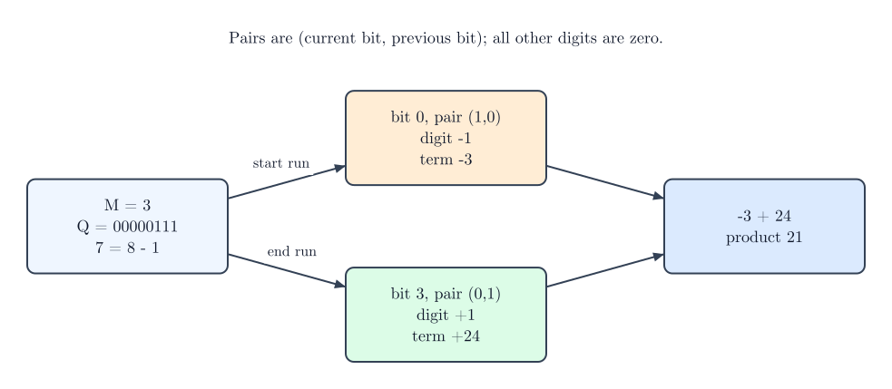
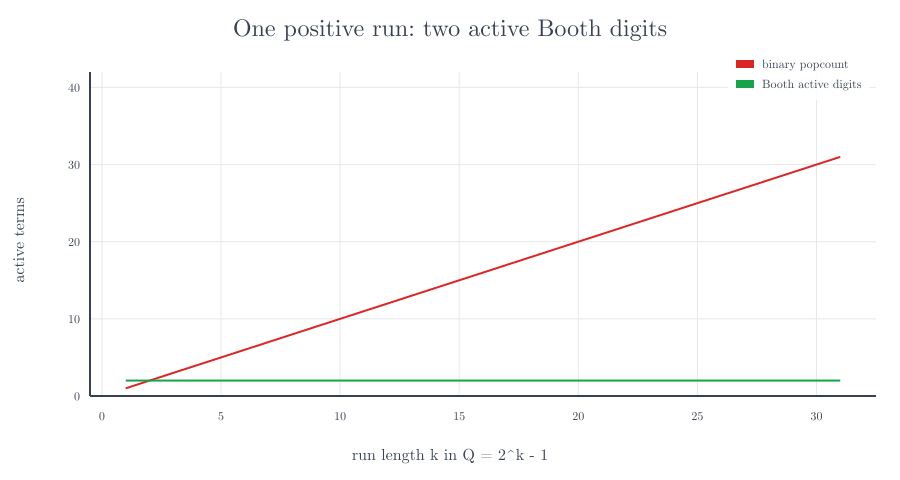
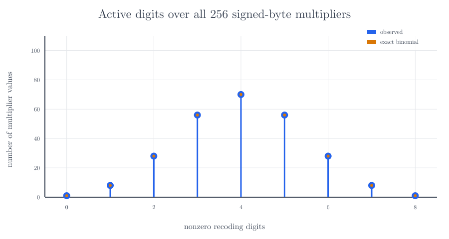

Booth Multiplication: Signed Digits and Their Actual Cost
Abstract
Multiply signed 32-bit integers exactly while exposing how the multiplier's bit transitions select positive and negative partial terms. Booth recoding can replace a long run of ones by two active digits, but isolated or alternating bits can cost more. We inspect a small product, retain the original signed examples and run-length experiment, and check every signed-byte multiplier's operation count. The product, counts and accumulator trace share one core loop.
The method
Let b_i be bit i of the multiplier's fixed 32-bit representation, and set the implicit lower bit b_-1 to zero. The signed digit is \(d_i=b_{i-1}-b_i\). Pair order matters: the first bit below is current, the second previous.
| current b_i | previous b_(i-1) | digit d_i | action |
|---|---|---|---|
| 0 | 0 | 0 | no contribution |
| 1 | 1 | 0 | no contribution |
| 1 | 0 | -1 | subtract M times 2^i |
| 0 | 1 | +1 | add M times 2^i |
The recoding telescopes:
Multiplying this identity by M proves the exact result. After processing bit i, the recoded prefix is \(\sum_{j=0}^{i-1}b_j2^j-b_i2^i\), which lies between -2i and 2i-1. With int32 M and i at most 31, every scaled term and accumulated value fits int64. The core widens M and multiplies by a positive power of two; it does not left-shift a negative operand. There are exactly 32 decisions, including zeros, and the final sign-bit weight needs no extra step.
Simple example: 3 times 7
The positive multiplier 7 has low bits 0111, so \(7=2^3-2^0\). Only digits d0=-1 and d3=+1 are active: the product is -3+24=21. The diagram reads those terms from the actual trace. Higher multiplier bits are zero.
#include <dm/dm.hpp>
int main() {
std::filesystem::create_directories("build");
const auto trace=dm::algorithms::booth_multiply_trace(3,7);
const auto& low=trace.steps[0];const auto& high=trace.steps[3];
dm::graphics::Diagram diagram(65,1100);
dm::graphics::DiagramNodeStyle style;style.width=3.4;style.height=1.6;
diagram.node("input",{0,0},"M = 3\nQ = 00000111\n7 = 8 - 1",style);
style.fill={255,237,213};
diagram.node("low",{5.4,1.5},std::format("bit {}, pair ({},{})\ndigit {}\nterm {}",
low.bit_index,low.current,low.previous,low.digit,low.contribution),style);
style.fill={220,252,231};
diagram.node("high",{5.4,-1.5},std::format("bit {}, pair ({},{})\ndigit +{}\nterm +{}",
high.bit_index,high.current,high.previous,high.digit,high.contribution),style);
style.fill={219,234,254};
diagram.node("product",{10.8,0},std::format("{} + {}\nproduct {}",low.contribution,high.contribution,trace.result.product),style)
.edge("input","low","start run").edge("input","high","end run")
.edge("low","product").edge("high","product")
.text({5.4,3.2},"Pairs are (current bit, previous bit); all other digits are zero.");
diagram.save_svg("build/booth_terms.svg");
}
Original signed examples and a negative multiplicand trace
The four original products are retained, followed by full-range boundary controls. Operation names refer to the signed recoding digit. When M is negative, subtracting a scaled M makes a positive numeric contribution. For -7 times 6, the active terms are +14 and -56, giving -42.
#include <dm/dm.hpp>
int main() {
const auto minimum=std::numeric_limits<std::int32_t>::min();
std::print("| M | Q | native product | widened built-in product | additions | subtractions |\n"
"| ---: | ---: | ---: | ---: | ---: | ---: |\n");
for (const auto& [m,q]:std::vector<std::pair<std::int32_t,std::int32_t>>{
{-7,6},{123456,-789},{-1000,-1000},{32767,32767},{minimum,minimum},{minimum,-1}}) {
const auto result=dm::algorithms::booth_multiply(m,q);
const auto reference=std::int64_t(m)*q;if (result.product!=reference) return 1;
std::print("| {} | {} | {} | {} | {} | {} |\n",m,q,result.product,reference,result.additions,result.subtractions);
}
const auto trace=dm::algorithms::booth_multiply_trace(-7,6);
std::print("\n| bit i | current | previous | digit | scaled M | contribution | accumulator |\n"
"| ---: | ---: | ---: | ---: | ---: | ---: | ---: |\n");
for (std::size_t i=0;i<4;++i) {
const auto& s=trace.steps[i];
std::print("| {} | {} | {} | {} | {} | {} | {} |\n",s.bit_index,s.current,s.previous,s.digit,
s.scaled_multiplicand,s.contribution,s.accumulator);
}
}| M | Q | native product | widened built-in product | additions | subtractions |
|---|---|---|---|---|---|
| -7 | 6 | -42 | -42 | 1 | 1 |
| 123456 | -789 | -97406784 | -97406784 | 3 | 4 |
| -1000 | -1000 | 1000000 | 1000000 | 1 | 2 |
| 32767 | 32767 | 1073676289 | 1073676289 | 1 | 1 |
| -2147483648 | -2147483648 | 4611686018427387904 | 4611686018427387904 | 0 | 1 |
| -2147483648 | -1 | 2147483648 | 2147483648 | 0 | 1 |
| bit i | current | previous | digit | scaled M | contribution | accumulator |
|---|---|---|---|---|---|---|
| 0 | 0 | 0 | 0 | -7 | 0 | 0 |
| 1 | 1 | 0 | -1 | -14 | 14 | 14 |
| 2 | 1 | 1 | 0 | -28 | 0 | 14 |
| 3 | 0 | 1 | 1 | -56 | -56 | -42 |
Checking the theory: one run versus alternating bits
A positive run of k low ones is \(2^k-1\), so for 1<=k<=31 it has one subtraction at bit zero and one addition at bit k. A straightforward positive binary expansion has k one-bit terms. Thus Booth uses more active digits at k=1, the same number at k=2, and fewer for longer runs.
A sign-extended negative run behaves differently: Q=-1 has only the initial subtraction, while the high bits remain one. The positive alternating pattern 0x55555555 has sixteen one bits but thirty-two transitions, so it requires thirty-two active Booth digits. These counts describe the recoding and do not measure execution time or establish a hardware speedup.
#include <dm/dm.hpp>
int main() {
std::filesystem::create_directories("build");
std::vector<double> length,booth,binary;
for (unsigned k=1;k<=31;++k) {
const auto q=static_cast<std::int32_t>((std::uint64_t{1}<<k)-1);
const auto result=dm::algorithms::booth_multiply(1,q);
const auto count=result.additions+result.subtractions;if (count!=2) return 1;
length.push_back(k);booth.push_back(count);binary.push_back(std::popcount(std::uint32_t(q)));
}
dm::graphics::RPlot::create()
.lines(length,binary,"binary popcount",dm::RGB{220,38,38},2)
.lines(length,booth,"Booth active digits",dm::RGB{22,163,74},2)
.title("One positive run: two active Booth digits")
.x_label("run length k in Q = 2^k - 1").y_label("active terms")
.y_limits(0,42).size(900,480).save_svg("build/booth_runs.svg");
std::print("| Q | full 32-bit representation | additions | subtractions | active digits |\n"
"| ---: | :--- | ---: | ---: | ---: |\n");
for (std::int32_t q:{0,1,7,0x55555555,-1,std::numeric_limits<std::int32_t>::min()}) {
const auto result=dm::algorithms::booth_multiply(1,q);
std::print("| {} | {:032b} | {} | {} | {} |\n",q,std::uint32_t(q),result.additions,result.subtractions,
result.additions+result.subtractions);
}
}| Q | full 32-bit representation | additions | subtractions | active digits |
|---|---|---|---|---|
| 0 | 00000000000000000000000000000000 | 0 | 0 | 0 |
| 1 | 00000000000000000000000000000001 | 1 | 1 | 2 |
| 7 | 00000000000000000000000000000111 | 1 | 1 | 2 |
| 1431655765 | 01010101010101010101010101010101 | 16 | 16 | 32 |
| -1 | 11111111111111111111111111111111 | 0 | 1 | 1 |
| -2147483648 | 10000000000000000000000000000000 | 0 | 1 | 1 |

Checking the theory: exact operation-count distribution
The indicator of an active digit is \(t_i=b_i\mathbin{\mathrm{xor}}b_{i-1}\). This transform is bijective: starting with b_-1=0, recover each b_i by \(b_i=t_i\mathbin{\mathrm{xor}}b_{i-1}\). Uniform 32-bit patterns therefore give a Binomial(32,1/2) active-digit count with mean sixteen. Long-run savings do not imply a universal reduction in active terms.
For a complete finite check, enumerate all 256 signed-byte values but still use the native 32-bit routine. Sign extension makes every comparison above bit seven equal, leaving eight variable transitions. Their exact frequencies must be the binomial coefficients \(\binom8j\), with mean four active digits.
#include <dm/dm.hpp>
int main() {
std::filesystem::create_directories("build");
std::array<unsigned,9> observed{};
const std::array<unsigned,9> predicted{1,8,28,56,70,56,28,8,1};
for (int raw=0;raw<256;++raw) {
const auto result=dm::algorithms::booth_multiply(1,raw<128?raw:raw-256);
++observed[result.additions+result.subtractions];
}
if (observed!=predicted) return 1;
std::vector<double> x,actual,theory,zero;
std::print("| active digits | observed signed-byte multipliers | exact binomial count |\n"
"| ---: | ---: | ---: |\n");
for (std::size_t j=0;j<observed.size();++j) {
x.push_back(j);actual.push_back(observed[j]);theory.push_back(predicted[j]);zero.push_back(0);
std::print("| {} | {} | {} |\n",j,observed[j],predicted[j]);
}
dm::graphics::RPlot::create()
.segments(x,zero,x,actual,dm::RGB{37,99,235},3)
.points(x,actual,"observed",dm::RGB{37,99,235},7)
.points(x,theory,"exact binomial",dm::RGB{217,119,6},3)
.title("Active digits over all 256 signed-byte multipliers")
.x_label("nonzero recoding digits").y_label("number of multiplier values")
.x_limits(-.5,8.5).y_limits(0,110).size(900,480).save_svg("build/booth_distribution.svg");
}| active digits | observed signed-byte multipliers | exact binomial count |
|---|---|---|
| 0 | 1 | 1 |
| 1 | 8 | 8 |
| 2 | 28 | 28 |
| 3 | 56 | 56 |
| 4 | 70 | 70 |
| 5 | 56 | 56 |
| 6 | 28 | 28 |
| 7 | 8 | 8 |
| 8 | 1 | 1 |

Native tests also check all 65,536 signed-byte operand pairs, with every partial accumulator compared to the signed-prefix identity. A hundred thousand generated full-width pairs and the existing two-hundred-thousand-pair suite check exact widened built-in products, including both INT32_MIN operands. Undefined-behavior sanitizer checks cover the focused suite. Logical counts remain positive for some recodings even when M=0; the API counts selected signed digits.
Conclusion
The corrected pair rule, telescoping proof and actual accumulator trace agree with the original signed products and full-range boundary controls. Long positive runs give two active digits, while alternating bits supply a counterexample to unconditional savings. The complete signed-byte distribution confirms the transition-count derivation.
Both APIs make exactly 32 decisions. The ordinary result uses constant storage; the trace owns 32 events. This implementation accumulates widened terms rather than emulating physical accumulator/multiplier registers. It demonstrates the radix-2 arithmetic, with no hardware timing claim. Generated integer inputs are sufficient, so no observed dataset is needed.
References
- Booth, A. D. (1951). A signed binary multiplication technique. The Quarterly Journal of Mechanics and Applied Mathematics, 4(2), 236–240. https://doi.org/10.1093/qjmam/4.2.236. The native implementation follows the signed-digit identity with widened accumulation.